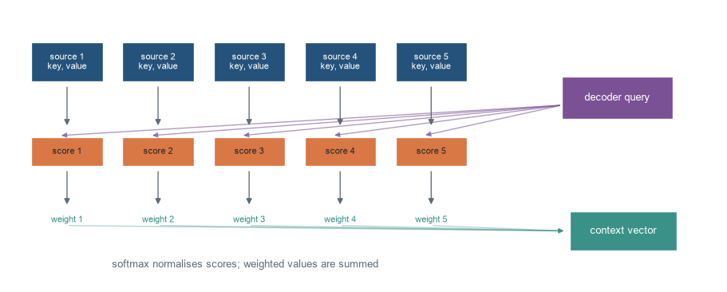
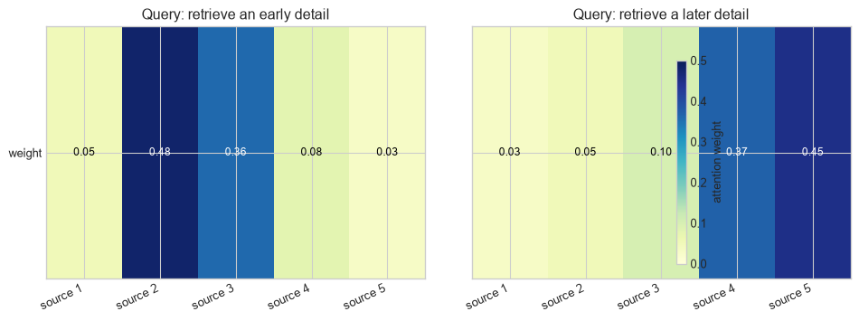
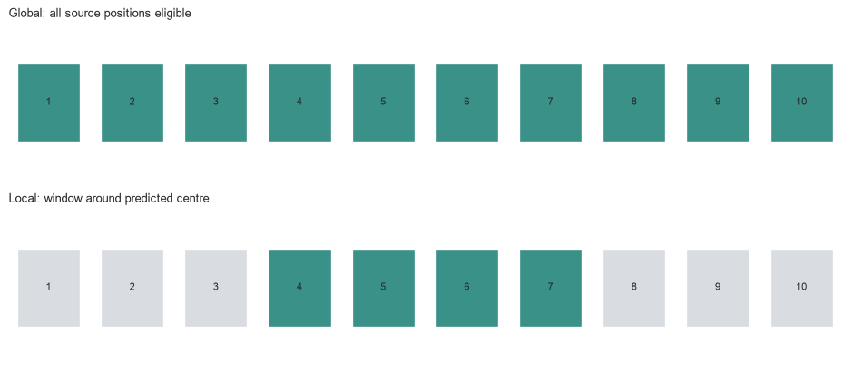
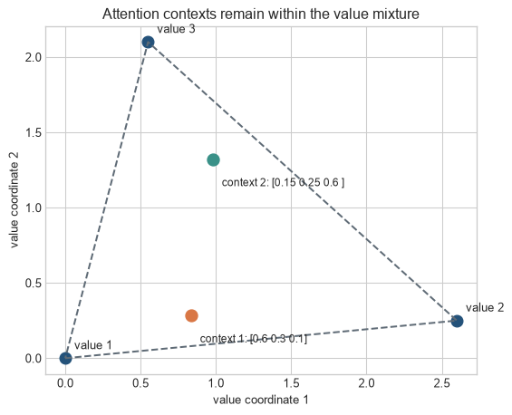

Query-dependent weighted retrieval from a sequence of representations
The problem
Chapter 18 ended with a constraint: an encoder-decoder model must compress every relevant source detail into one fixed-width final state, and every decoder decision must rely on that same compressed summary. Different output decisions often need different parts of the source. What is missing is an operation that lets each decoder step access a different portion of the source representations on demand.
Attention is that operation, and it is a retrieval. The decoder states what it is currently looking for; each source representation is scored against that request; the scores are normalised into weights; and a weighted combination of source values is returned. Because the request changes at each decoding step, the returned combination changes with it, and the source states remain individually accessible instead of being read only through one fixed vector. The same retrieval pattern applies well beyond translation — to image regions, memory slots, database records, or previous model states. This chapter develops it in the encoder-decoder setting because the query, the source positions, and the resulting context vector can be inspected separately; Chapter 20 applies the same ingredients when the sequence queries itself.
A small constructed source makes retrieval visible
The running example contains five encoder states, each with three value coordinates. A decoder state produces a query. Attention scores each encoder state against that query, converts the scores into weights, and returns a context vector. The values are constructed for explanation; they are not learned semantic vectors, and the results illustrate retrieval mechanics rather than evidence about translation quality.
The first diagram follows one query through the whole operation. Read it left to right: each source supplies a key and a value, the query is scored against every key, softmax turns the scores into weights, and the weights mix the values into one context vector. Notice that every source position reaches the context; what differs is how much each contributes.
Code
import numpy as npimport matplotlib.pyplot as pltfrom matplotlib.patches import Rectangle, FancyArrowPatchplt.style.use("seaborn-v0_8-whitegrid")blue, teal, orange, purple, grey ="#24527a", "#3a9188", "#d97745", "#7a5195", "#5f6b76"fig,ax=plt.subplots(figsize=(12,4.7)); ax.axis("off")for i inrange(5): x=.3+i*1.15 ax.add_patch(Rectangle((x,3.0),.9,.58,facecolor=blue,edgecolor="white")) ax.text(x+.45,3.29,f"source {i+1}\nkey, value",ha="center",va="center",fontsize=8,color="white") ax.add_patch(FancyArrowPatch((x+.45,2.95),(x+.45,2.32),arrowstyle="-|>",mutation_scale=11,color=grey)) ax.add_patch(Rectangle((x,1.75),.9,.43,facecolor=orange,edgecolor="white")) ax.text(x+.45,1.965,f"score {i+1}",ha="center",va="center",fontsize=8) ax.add_patch(FancyArrowPatch((x+.45,1.7),(x+.45,1.15),arrowstyle="-|>",mutation_scale=11,color=grey)) ax.text(x+.45,.92,f"weight {i+1}",ha="center",fontsize=8,color=teal)ax.add_patch(Rectangle((7.0,2.45),1.4,.62,facecolor=purple,edgecolor="white")); ax.text(7.7,2.76,"decoder query",ha="center",va="center",color="white")for i inrange(5): ax.add_patch(FancyArrowPatch((7.0,2.65),(5.25-i*1.15,2.2),arrowstyle="-|>",mutation_scale=10,color=purple,alpha=.6))ax.add_patch(Rectangle((7.1,.5),1.35,.58,facecolor=teal,edgecolor="white")); ax.text(7.775,.79,"context vector",ha="center",va="center",color="white")for i inrange(5): ax.add_patch(FancyArrowPatch((.75+i*1.15,.87),(7.05,.79),arrowstyle="-|>",mutation_scale=9,color=teal,alpha=.38))ax.text(3.0,.25,"softmax normalises scores; weighted values are summed",ha="center",color=grey)ax.set_xlim(0,9); ax.set_ylim(0,4.1); plt.show()

Figure 20.1: Attention makes a query-dependent context vector by scoring source keys, normalising the scores, and combining the corresponding values.
The weights depend on the query. A later decoder state can therefore retrieve a different combination of the same source values. The source states remain available as separate objects instead of being exposed only through one fixed encoder vector.
Attention. Query-dependent weighted retrieval from a set of value representations. Queries and keys determine weights; values supply the retrieved content. Large attention weights do not by themselves establish a causal explanation.
Attention weight and causal explanation. An attention weight records the model’s retrieval calculation for one configuration. A causal explanation requires an intervention that changes the purported evidence and measures the resulting output change.
Level 1 - Intuition
Attention changes access to stored representations
An encoder produces a sequence of representations. A decoder that receives only the final encoder state must use that one vector for every output decision. Attention retains the encoder states and lets the decoder compare its current state with each one.
The comparison produces a relevance score for every source position. A normalisation turns scores into non-negative weights that sum to one. The context vector is the weighted average of source values. Positions with greater weight contribute more to the returned vector, but every unmasked value can contribute.
Query, key, and value name different jobs
The query describes what the current computation is seeking. The key is the representation used for matching. The value is the representation returned after matching. A system may use the same encoder state for key and value, as in early encoder-decoder attention. It may also learn separate projections, so matching is performed in one space and retrieved content is expressed in another.
Code
source_labels=["source 1","source 2","source 3","source 4","source 5"]weights=np.array([[.05,.48,.36,.08,.03],[.03,.05,.10,.37,.45]])fig,axes=plt.subplots(1,2,figsize=(10,3.8),sharey=True)for ax,row,title inzip(axes,weights,["Query: retrieve an early detail","Query: retrieve a later detail"]): image=ax.imshow(row[None,:],cmap="YlGnBu",vmin=0,vmax=.5,aspect="auto") ax.set_xticks(range(5),source_labels,rotation=25,ha="right"); ax.set_yticks([0],["weight"]); ax.set_title(title)for i,value inenumerate(row): ax.text(i,0,f"{value:.2f}",ha="center",va="center",fontsize=9,color="black"if value<.28else"white")fig.colorbar(image,ax=axes.ravel().tolist(),label="attention weight",shrink=.8); plt.tight_layout(); plt.show()

Figure 20.2: Different queries retrieve different mixtures from the same source values because their score patterns differ.
The two rows use the same source sequence. Their difference comes entirely from the query and score function. Attention therefore does not designate one globally important source position; relevance is conditional on the computation asking the question.
Attention is a differentiable retrieval rule
Hard retrieval would choose the single largest score and return one value. Soft attention returns a weighted combination, allowing gradients to flow through every score and every unmasked value. A sharply concentrated distribution approaches selection; a diffuse distribution combines several positions.
This differentiability is useful for training, but it has an interpretive consequence. A large weight identifies a strong route through one particular attention operation. It does not by itself show that changing that source item would change the final prediction, because later layers, residual paths, value vectors, and other attention heads can compensate.
Attention does not supply order by itself
If two source states have identical keys and values, swapping their positions leaves ordinary content attention unchanged. The source encoder may already carry order through recurrence or convolution. Self-attention architectures need an explicit positional treatment, which Chapter 21 develops. Attention determines access to the representations supplied to it; it does not determine what those representations encode.
Level 1 defined attention as query-dependent retrieval. Level 2 follows the computation from scores to a context vector and identifies the operational role of masks.
Level 2 - Mechanics
Scores compare one query with every key
Let \(q\) be a decoder query and \(k_i\) be the key at source position \(i\). A dot-product score is \(e_i=q^\top k_i\). A bilinear score is \(e_i=q^\top Wk_i\). Additive attention uses a learned nonlinear comparison such as
\[
e_i=v_a^\top\tanh(W_q q+W_k k_i+b_a).
\]
The score has no requirement to lie between zero and one. It is a compatibility value whose scale and distribution depend on the parameterisation and inputs. Bahdanau attention used an additive alignment function in an encoder-decoder model (Bahdanau, Cho, and Bengio 2015). Luong and colleagues compared dot-product, general bilinear, and related score functions (Luong, Pham, and Manning 2015).
The two score patterns differ because the bilinear matrix changes which key directions match the query. Score choice is part of the model’s learned interface.
Every \(\alpha_i\) is non-negative and the weights sum to one. Raising one score affects all weights through the denominator. Adding the same constant to every score leaves the distribution unchanged, so stable implementations subtract the maximum score before exponentiation.
The context has the same width as one value vector. It is not a longer concatenation of source states. The attention distribution determines how much each value contributes to each coordinate of the returned context.
Temperature changes concentration
Dividing scores by a positive temperature \(\tau\) before softmax gives
A smaller temperature makes score differences more decisive. A larger temperature makes weights more uniform. Dot-product attention in Transformers uses a scale factor related to key dimension; Chapter 20 derives that specific form.
Figure 20.3: Softmax temperature changes the concentration of an attention distribution while retaining the ranking of scores.
Very sharp distributions can make learning sensitive to small score changes. Very diffuse distributions can blur distinctions the decoder needs. The appropriate scale is learned or selected within a full training configuration, not inferred from one visualisation.
Masks define which keys are eligible
Attention often receives rectangular batches containing padding. A padding key must receive zero weight. A causal decoder must not retrieve a future source or target position when the task prohibits it. A mask enforces this by assigning an ineligible score a value that becomes zero after softmax.
Figure 20.4: Masking removes ineligible positions before softmax, reallocating their probability mass across valid positions.
Masking after softmax and then failing to renormalise is a different operation: the returned weights no longer sum to one and the context scale changes with padding length. Boolean-mask conventions, fill values, and broadcast dimensions should be tested explicitly.
Global and local access trade coverage for cost
Global attention scores every available source state. Local attention restricts scoring to a window or selected subset. Global access can retrieve any source position but grows with sequence length. Local access reduces work and may suit monotonic or spatially local tasks, but it can miss a relevant position outside the window. Luong et al. compared global and local attention in neural machine translation (Luong, Pham, and Manning 2015).
Code
fig,axes=plt.subplots(2,1,figsize=(10,4.4),sharex=True)for ax,title,active in [(axes[0],"Global: all source positions eligible",set(range(10))),(axes[1],"Local: window around predicted centre",set(range(3,7)))]:for i inrange(10): colour=teal if i in active else"#d9dde1" ax.add_patch(Rectangle((i,.25),.75,.5,facecolor=colour,edgecolor="white")); ax.text(i+.375,.5,str(i+1),ha="center",va="center",fontsize=8) ax.set_xlim(-.1,10); ax.set_ylim(0,1); ax.axis("off"); ax.set_title(title,loc="left",fontsize=10)plt.tight_layout(); plt.show()

Figure 20.5: Global attention scores every source position; local attention restricts retrieval to a declared window around the current location.
The access pattern is an assumption about what a query may retrieve. It should be stated before interpreting observed weights or comparing runtime.
Level 2 described the forward computation and its eligibility rules. Level 3 expresses the batched operation in tensor notation and verifies a masked implementation.
Level 3 - Mathematics & Code
Attention has a compact tensor form
For one query \(q\in\mathbb{R}^{D_k}\), keys \(K\in\mathbb{R}^{S\times D_k}\), and values \(V\in\mathbb{R}^{S\times D_v}\), dot-product attention is
\[
\alpha=\operatorname{softmax}(Kq),
\qquad
c=\alpha^\top V.
\]
Here \(Kq\in\mathbb{R}^{S}\) supplies one score per source position, \(\alpha\in\mathbb{R}^{S}\) supplies one weight per position, and \(c\in\mathbb{R}^{D_v}\) is the context vector. The key dimension and value dimension need not be equal.
For a batch of decoder queries \(Q\in\mathbb{R}^{B\times T\times D_k}\) and source keys \(K\in\mathbb{R}^{B\times S\times D_k}\), the score tensor has shape \(B\times T\times S\). Each target position has its own distribution over source positions.
The final dimension of scores indexes source positions and is the dimension over which softmax must operate. Applying softmax across target positions or batch items can produce plausible tensor shapes while implementing a different model.
-np.inf is conceptually exact for this NumPy example. Hardware kernels often use a large finite negative number compatible with the dtype. Under reduced precision, that value, the order of casting, and the all-masked-row policy require tests because softmax([-inf,-inf,...]) is undefined.
Weighted sums are mixtures, not discrete selections
If all attention weights are non-negative and sum to one, the context lies in the convex hull of the value vectors. A context coordinate can be between the corresponding coordinates of the supplied values. Attention cannot return a value outside that hull without later transformations, residual additions, or a value projection.
Code
value_points=np.array([[0.,0.],[2.6,.25],[.55,2.1]])weight_sets=np.array([[.6,.3,.1],[.15,.25,.6]])contexts_2d=weight_sets@value_pointsfig,ax=plt.subplots(figsize=(6,5.2))polygon=np.vstack([value_points,value_points[0]])ax.plot(polygon[:,0],polygon[:,1],color=grey,linestyle="--")for i,(x,y) inenumerate(value_points): ax.scatter(x,y,s=90,color=blue); ax.text(x+.06,y+.06,f"value {i+1}")for i,(x,y) inenumerate(contexts_2d): ax.scatter(x,y,s=95,color=orange if i==0else teal); ax.text(x+.06,y-.18,f"context {i+1}: {weight_sets[i]}",fontsize=9)ax.set_xlabel("value coordinate 1"); ax.set_ylabel("value coordinate 2"); ax.set_title("Attention contexts remain within the value mixture"); ax.set_aspect("equal"); plt.tight_layout(); plt.show()

Figure 20.6: A context vector is a weighted mixture of value vectors; moving attention mass changes the returned coordinates continuously.
This geometric constraint is useful when debugging. If a purported weighted average lies outside coordinate-wise ranges of unprojected values, a mask, axis, normalisation, or code path differs from the stated operation.
Additive scores learn a comparison space
For query \(q_t\) and encoder state \(h_i\), additive attention uses
\[
e_{ti}=v_a^\top\tanh(W_q q_t+W_h h_i+b_a).
\]
The matrices can map decoder and encoder representations with different widths into a shared alignment width. The learned vector \(v_a\) reduces the nonlinear comparison to one scalar score. This formulation can express interactions beyond a direct dot product, but it adds parameters and elementwise work for every query-key pair.
Code
rng=np.random.default_rng(19)query_width,source_width,alignment_width=4,6,5q=rng.normal(size=query_width); source=rng.normal(size=(5,source_width))W_q=rng.normal(size=(alignment_width,query_width)); W_h=rng.normal(size=(alignment_width,source_width)); v_a=rng.normal(size=alignment_width)additive_scores=np.array([v_a@np.tanh(W_q@q+W_h@h) for h in source])print("additive score shape:",additive_scores.shape)print("additive weights: ",np.round(softmax(additive_scores),3))
The code computes one source score at a time to expose the equation. Vectorised kernels broadcast the transformed query across source positions and compute all scores together. The mathematical dependency remains one query against each eligible key.
Level 3 established attention as a masked batched tensor operation. Level 4 examines what changes at scale and why weights require careful interpretation.
Level 4 - Research & Systems
Attention alters information access, not the need for representation quality
Attention lets a decoder retrieve from individual encoder states instead of depending solely on one final state (Bahdanau, Cho, and Bengio 2015). It does not guarantee that encoder states preserve the required detail, that scores identify the most useful position, or that the output model uses the context in the intended way. Encoder architecture, value projection, decoder state, objective, and data distribution remain part of the system.
Cross-attention uses one sequence or modality to query another. Self-attention uses a sequence to query itself and will be treated separately in Chapter 20. Both use score matrices and weighted value sums, but their masks, source-target relationships, and computational patterns differ.
Attention weights are not sufficient explanations
High attention weight is evidence about one routing distribution within the implemented computation. It does not establish that the associated input is necessary, sufficient, or causally responsible for the final output. Distinct attention distributions can sometimes yield similar outputs because values are redundant or later components compensate.
Jain and Wallace found that attention weights in several NLP models could be uncorrelated with gradient-based importance measures and that alternative attention distributions could produce equivalent predictions (Jain and Wallace 2019). This does not make weights useless for diagnosis. It means explanatory claims require tests: remove or replace source content, intervene on weights or values, compare outputs, and report the model components held fixed.
Score scale, dtype, and masking affect numerical behaviour
Exponentiation magnifies score scale. Subtracting the row maximum before softmax prevents overflow without changing the result. Low-precision score accumulation can alter close rankings, and large negative mask fills must be representable in the selected dtype. All-masked rows need explicit handling rather than allowing NaNs to propagate silently.
The scale of dot products grows with key dimension under common random assumptions. Transformer attention uses a dimension-based scaling factor for this reason; Chapter 20 will derive and test it. The current chapter’s conclusion is narrower: any implementation must state score function, scaling, dtype, mask convention, and normalisation axis.
Cost follows the query-key access pattern
With \(T\) queries, \(S\) keys, key width \(D_k\), and value width \(D_v\), global attention forms or streams through \(T\times S\) scores. The arithmetic for scores and weighted values is on the order of
\[
O(TS(D_k+D_v)).
\]
Storing weights costs \(O(TS)\) elements per batch item and head. Decoder cross-attention often has modest \(T\) per generation step but may cache encoder keys and values. Full self-attention has \(T=S\) and creates a quadratic score matrix; Chapter 20 examines that case directly.
Local windows, sparse patterns, chunking, and monotonic constraints reduce the eligible pair set. They also impose a retrieval restriction that can change outputs. A runtime comparison should report effective source length, valid-token fraction, mask density, dtype, cached state, and whether the implementation materialises the score matrix.
Attention modules need targeted tests
An attention audit should record:
query, key, and value sources, shapes, projections, and parameter sharing;
score function, scale or temperature, normalisation dimension, and dropout placement;
global, local, causal, padding, and cross-source eligibility rules;
mask dtype, broadcast shape, fill value, and all-masked-row behaviour;
source and target position conventions, truncation, and cache policy;
score ranges, entropy of weight distributions, masked mass, non-finite values, and output norms;
latency, peak memory, valid-token throughput, and score-matrix materialisation;
intervention results supporting any claim that selected positions explain an output.
The audit distinguishes a valid weighted retrieval computation from a claim about model reasoning.
Common misconceptions
Attention chooses exactly one source item. Standard soft attention returns a weighted combination of eligible values.
Keys and values must be identical. Early models often reused states, but separate learned projections can give them different roles.
Attention weights are independent probabilities. Softmax makes them compete through a shared denominator.
Scores are probabilities. Scores are unnormalised compatibility values and can be negative or arbitrarily scaled.
A larger score always means a larger final contribution. Masks, softmax competition, value magnitude, later projections, and other paths also matter.
Masking after softmax is equivalent to masking before it. Post-softmax masking changes total mass unless weights are renormalised.
Padding masks and causal masks are interchangeable. They encode different eligibility rules.
A sharp distribution proves the model has found the correct evidence. Concentration is a geometric property of one attention operation.
Attention weights are causal explanations. They need intervention and output tests before supporting that claim.
Attention supplies order. It operates on the representations and positional information it receives.
Global attention is always preferable. It expands access and cost; local restrictions can be appropriate when justified by the task.
Attention removes quadratic cost in self-attention. Full self-attention scores every query-key pair.
All-masked rows have zero attention by default. Naive softmax can return undefined values for them.
Matching output shape proves the correct softmax axis was used. Normalising across the wrong dimension can preserve shape while changing the model.
Exercises
Identify the query, keys, values, scores, weights, and context in the running example.
Compute dot-product scores for one query and three supplied keys.
Calculate softmax weights by hand for three scores and verify that they sum to one.
Show algebraically that adding a constant to every score leaves softmax unchanged.
Compare attention distributions at temperatures 0.5, 1, and 2 for one score vector.
Calculate a context vector from three values and a supplied weight vector.
Verify that the result lies in the convex hull of the values.
Implement a stable softmax and compare it with a naive implementation on large scores.
Construct a padding mask for a batch with source lengths 5, 3, and 1.
Test that masked keys receive exactly zero probability in a masked-attention implementation.
Define and test the intended behaviour for an all-masked row.
Implement dot-product and bilinear attention and compare their score shapes.
Implement additive attention for query and key vectors with different widths.
Explain how using the wrong softmax axis changes a batched cross-attention computation.
Compare global attention with a fixed local window on a task where the relevant source position lies outside the window.
Calculate the score-matrix shape and element count for batch 8, target length 64, source length 512, and four heads.
Derive the arithmetic order for global cross-attention with \(T\) queries and \(S\) keys.
Design a test showing that one decoder query retrieves a different context from another query over the same source states.
Replace a high-weight source value with a control value and measure the change in output; state what this does and does not establish.
Design an audit for a masked cross-attention module used in a clinical or policy-text classifier.
Compare attention-weight entropy across short and long source sequences and interpret the result cautiously.
Specify the data required to reproduce one attention map from a deployed model.
Summary
Attention is a query-dependent weighted retrieval operation. A query scores a set of keys, softmax converts eligible scores into competing weights, and the weights mix the corresponding values into a context vector. Different queries can retrieve different contexts from the same source representations.
Score functions, temperature, masks, and the softmax axis define the computation. Masking is part of the model’s information-access contract: padding, causal restrictions, local windows, and cross-source boundaries each determine which values can affect a context. Weighted sums are differentiable mixtures, not discrete selections.
Attention expands access to source states but does not guarantee faithful representations, correct alignment, causal explanation, or low cost. Numerical stability, mask handling, source length, dtype, and score-matrix storage all affect practical behaviour. The next chapter applies query-key-value attention within one sequence and introduces multiple learned attention subspaces.
Looking ahead
Chapter 20 examines self-attention and multi-head attention. The sequence will supply its own queries, keys, and values, allowing each position to retrieve from other positions under a declared mask; multiple heads will learn several retrieval patterns in parallel.
Further reading
Additive encoder-decoder attention is introduced by Bahdanau, Cho, and Bengio (2015). Dot-product, bilinear, global, and local variants are compared by Luong, Pham, and Manning (2015). The limits of treating attention weights as explanations are examined by Jain and Wallace (2019).
Bahdanau, Dzmitry, Kyunghyun Cho, and Yoshua Bengio. 2015. “Neural Machine Translation by Jointly Learning to Align and Translate.” In International Conference on Learning Representations. https://mlanthology.org/iclr/2015/bahdanau2015iclr-neural/.
Jain, Sarthak, and Byron C. Wallace. 2019. “Attention Is Not Explanation.” In Proceedings of the 2019 Conference of the North American Chapter of the Association for Computational Linguistics: Human Language Technologies, 3543–56. Association for Computational Linguistics. https://doi.org/10.18653/v1/N19-1357.
Luong, Thang, Hieu Pham, and Christopher D. Manning. 2015. “Effective Approaches to Attention-Based Neural Machine Translation.” In Proceedings of the 2015 Conference on Empirical Methods in Natural Language Processing, 1412–21. Association for Computational Linguistics. https://doi.org/10.18653/v1/D15-1166.
Source Code
---title: "Attention"subtitle: "Query-dependent weighted retrieval from a sequence of representations"---## The problemChapter 18 ended with a constraint: an encoder-decoder model must compress every relevant source detail into one fixed-width final state, and every decoder decision must rely on that same compressed summary. Different output decisions often need different parts of the source. What is missing is an operation that lets each decoder step access a different portion of the source representations on demand.Attention is that operation, and it is a retrieval. The decoder states what it is currently looking for; each source representation is scored against that request; the scores are normalised into weights; and a weighted combination of source values is returned. Because the request changes at each decoding step, the returned combination changes with it, and the source states remain individually accessible instead of being read only through one fixed vector. The same retrieval pattern applies well beyond translation — to image regions, memory slots, database records, or previous model states. This chapter develops it in the encoder-decoder setting because the query, the source positions, and the resulting context vector can be inspected separately; Chapter 20 applies the same ingredients when the sequence queries itself.### A small constructed source makes retrieval visibleThe running example contains five encoder states, each with three value coordinates. A decoder state produces a query. Attention scores each encoder state against that query, converts the scores into weights, and returns a context vector. The values are constructed for explanation; they are not learned semantic vectors, and the results illustrate retrieval mechanics rather than evidence about translation quality.The first diagram follows one query through the whole operation. Read it left to right: each source supplies a key and a value, the query is scored against every key, softmax turns the scores into weights, and the weights mix the values into one context vector. Notice that every source position reaches the context; what differs is how much each contributes.```{python}#| label: fig-attention-overview#| fig-cap: "Attention makes a query-dependent context vector by scoring source keys, normalising the scores, and combining the corresponding values."#| fig-alt: "Five source-state boxes provide keys and values. A decoder query sends arrows to score boxes, scores pass through softmax into weighted arrows, and the values combine into one context vector."import numpy as npimport matplotlib.pyplot as pltfrom matplotlib.patches import Rectangle, FancyArrowPatchplt.style.use("seaborn-v0_8-whitegrid")blue, teal, orange, purple, grey ="#24527a", "#3a9188", "#d97745", "#7a5195", "#5f6b76"fig,ax=plt.subplots(figsize=(12,4.7)); ax.axis("off")for i inrange(5): x=.3+i*1.15 ax.add_patch(Rectangle((x,3.0),.9,.58,facecolor=blue,edgecolor="white")) ax.text(x+.45,3.29,f"source {i+1}\nkey, value",ha="center",va="center",fontsize=8,color="white") ax.add_patch(FancyArrowPatch((x+.45,2.95),(x+.45,2.32),arrowstyle="-|>",mutation_scale=11,color=grey)) ax.add_patch(Rectangle((x,1.75),.9,.43,facecolor=orange,edgecolor="white")) ax.text(x+.45,1.965,f"score {i+1}",ha="center",va="center",fontsize=8) ax.add_patch(FancyArrowPatch((x+.45,1.7),(x+.45,1.15),arrowstyle="-|>",mutation_scale=11,color=grey)) ax.text(x+.45,.92,f"weight {i+1}",ha="center",fontsize=8,color=teal)ax.add_patch(Rectangle((7.0,2.45),1.4,.62,facecolor=purple,edgecolor="white")); ax.text(7.7,2.76,"decoder query",ha="center",va="center",color="white")for i inrange(5): ax.add_patch(FancyArrowPatch((7.0,2.65),(5.25-i*1.15,2.2),arrowstyle="-|>",mutation_scale=10,color=purple,alpha=.6))ax.add_patch(Rectangle((7.1,.5),1.35,.58,facecolor=teal,edgecolor="white")); ax.text(7.775,.79,"context vector",ha="center",va="center",color="white")for i inrange(5): ax.add_patch(FancyArrowPatch((.75+i*1.15,.87),(7.05,.79),arrowstyle="-|>",mutation_scale=9,color=teal,alpha=.38))ax.text(3.0,.25,"softmax normalises scores; weighted values are summed",ha="center",color=grey)ax.set_xlim(0,9); ax.set_ylim(0,4.1); plt.show()```The weights depend on the query. A later decoder state can therefore retrieve a different combination of the same source values. The source states remain available as separate objects instead of being exposed only through one fixed encoder vector.::: {.concept-box .concept-core #concept-attention data-term="Attention" data-domain="Representations and Transformers"}**Attention.** Query-dependent weighted retrieval from a set of value representations. Queries and keys determine weights; values supply the retrieved content. Large attention weights do not by themselves establish a causal explanation.:::::: {.concept-box .concept-distinction #concept-attention-explanation data-term="Attention weight and causal explanation" data-domain="Representations and Transformers"}**Attention weight and causal explanation.** An attention weight records the model's retrieval calculation for one configuration. A causal explanation requires an intervention that changes the purported evidence and measures the resulting output change.:::## Level 1 - Intuition### Attention changes access to stored representationsAn encoder produces a sequence of representations. A decoder that receives only the final encoder state must use that one vector for every output decision. Attention retains the encoder states and lets the decoder compare its current state with each one.The comparison produces a relevance score for every source position. A normalisation turns scores into non-negative weights that sum to one. The context vector is the weighted average of source values. Positions with greater weight contribute more to the returned vector, but every unmasked value can contribute.### Query, key, and value name different jobsThe **query** describes what the current computation is seeking. The **key** is the representation used for matching. The **value** is the representation returned after matching. A system may use the same encoder state for key and value, as in early encoder-decoder attention. It may also learn separate projections, so matching is performed in one space and retrieved content is expressed in another.```{python}#| label: fig-query-dependent-retrieval#| fig-cap: "Different queries retrieve different mixtures from the same source values because their score patterns differ."#| fig-alt: "Two heatmaps show attention weights over five source positions for two decoder queries. The first concentrates on positions two and three; the second concentrates on positions four and five."source_labels=["source 1","source 2","source 3","source 4","source 5"]weights=np.array([[.05,.48,.36,.08,.03],[.03,.05,.10,.37,.45]])fig,axes=plt.subplots(1,2,figsize=(10,3.8),sharey=True)for ax,row,title inzip(axes,weights,["Query: retrieve an early detail","Query: retrieve a later detail"]): image=ax.imshow(row[None,:],cmap="YlGnBu",vmin=0,vmax=.5,aspect="auto") ax.set_xticks(range(5),source_labels,rotation=25,ha="right"); ax.set_yticks([0],["weight"]); ax.set_title(title)for i,value inenumerate(row): ax.text(i,0,f"{value:.2f}",ha="center",va="center",fontsize=9,color="black"if value<.28else"white")fig.colorbar(image,ax=axes.ravel().tolist(),label="attention weight",shrink=.8); plt.tight_layout(); plt.show()```The two rows use the same source sequence. Their difference comes entirely from the query and score function. Attention therefore does not designate one globally important source position; relevance is conditional on the computation asking the question.### Attention is a differentiable retrieval ruleHard retrieval would choose the single largest score and return one value. Soft attention returns a weighted combination, allowing gradients to flow through every score and every unmasked value. A sharply concentrated distribution approaches selection; a diffuse distribution combines several positions.This differentiability is useful for training, but it has an interpretive consequence. A large weight identifies a strong route through one particular attention operation. It does not by itself show that changing that source item would change the final prediction, because later layers, residual paths, value vectors, and other attention heads can compensate.### Attention does not supply order by itselfIf two source states have identical keys and values, swapping their positions leaves ordinary content attention unchanged. The source encoder may already carry order through recurrence or convolution. Self-attention architectures need an explicit positional treatment, which Chapter 21 develops. Attention determines access to the representations supplied to it; it does not determine what those representations encode.Level 1 defined attention as query-dependent retrieval. Level 2 follows the computation from scores to a context vector and identifies the operational role of masks.## Level 2 - Mechanics### Scores compare one query with every keyLet $q$ be a decoder query and $k_i$ be the key at source position $i$. A dot-product score is $e_i=q^\top k_i$. A bilinear score is $e_i=q^\top Wk_i$. Additive attention uses a learned nonlinear comparison such as$$e_i=v_a^\top\tanh(W_q q+W_k k_i+b_a).$$The score has no requirement to lie between zero and one. It is a compatibility value whose scale and distribution depend on the parameterisation and inputs. Bahdanau attention used an additive alignment function in an encoder-decoder model [@bahdanau2015attention]. Luong and colleagues compared dot-product, general bilinear, and related score functions [@luong2015attention].```{python}query=np.array([.8,-.3,.5])keys=np.array([[.2,.7,-.1],[.9,-.2,.4],[.1,.3,.8],[-.6,.2,.5],[.4,-.8,-.2]])values=np.array([[1.,0.,.2],[.7,.4,.1],[.2,.9,.3],[.1,.3,.8],[.4,.2,1.]])dot_scores=keys@queryW=np.array([[1.,.1,0.],[0.,.8,.2],[.2,0.,1.]])bilinear_scores=keys@(W.T@query)print("dot-product scores:",np.round(dot_scores,3))print("bilinear scores: ",np.round(bilinear_scores,3))```The two score patterns differ because the bilinear matrix changes which key directions match the query. Score choice is part of the model's learned interface.### Softmax makes scores competeFor scores $e_1,\ldots,e_S$, softmax defines$$\alpha_i=\frac{\exp(e_i)}{\sum_{j=1}^{S}\exp(e_j)}.$$Every $\alpha_i$ is non-negative and the weights sum to one. Raising one score affects all weights through the denominator. Adding the same constant to every score leaves the distribution unchanged, so stable implementations subtract the maximum score before exponentiation.```{python}def softmax(scores): shifted=scores-scores.max() exp=np.exp(shifted)return exp/exp.sum()attention_weights=softmax(dot_scores)context=attention_weights@valuesprint("weights:",np.round(attention_weights,3),"sum:",attention_weights.sum())print("context:",np.round(context,3))```The context has the same width as one value vector. It is not a longer concatenation of source states. The attention distribution determines how much each value contributes to each coordinate of the returned context.### Temperature changes concentrationDividing scores by a positive temperature $\tau$ before softmax gives$$\alpha_i(\tau)=\frac{\exp(e_i/\tau)}{\sum_j\exp(e_j/\tau)}.$$A smaller temperature makes score differences more decisive. A larger temperature makes weights more uniform. Dot-product attention in Transformers uses a scale factor related to key dimension; Chapter 20 derives that specific form.```{python}#| label: fig-softmax-temperature#| fig-cap: "Softmax temperature changes the concentration of an attention distribution while retaining the ranking of scores."#| fig-alt: "Three bar charts show attention weights over five source positions at temperatures 0.5, 1.0, and 2.0. Lower temperature concentrates more weight on the highest-scoring position."temperatures=[.5,1.,2.]fig,axes=plt.subplots(1,3,figsize=(12,3.8),sharey=True)for ax,temp inzip(axes,temperatures): w=softmax(dot_scores/temp) ax.bar(range(1,6),w,color=teal) ax.set_title(f"temperature {temp}"); ax.set_xlabel("Source position"); ax.set_ylim(0,.8)axes[0].set_ylabel("Attention weight"); plt.tight_layout(); plt.show()```Very sharp distributions can make learning sensitive to small score changes. Very diffuse distributions can blur distinctions the decoder needs. The appropriate scale is learned or selected within a full training configuration, not inferred from one visualisation.### Masks define which keys are eligibleAttention often receives rectangular batches containing padding. A padding key must receive zero weight. A causal decoder must not retrieve a future source or target position when the task prohibits it. A mask enforces this by assigning an ineligible score a value that becomes zero after softmax.```{python}#| label: fig-attention-mask#| fig-cap: "Masking removes ineligible positions before softmax, reallocating their probability mass across valid positions."#| fig-alt: "Two bar charts compare unmasked attention over five positions with masked attention in which positions four and five receive zero weight and earlier weights are renormalised."valid=np.array([True,True,True,False,False])masked_scores=dot_scores.copy(); masked_scores[~valid]=-np.infmasked_weights=softmax(masked_scores)fig,axes=plt.subplots(1,2,figsize=(10,3.8),sharey=True)axes[0].bar(range(1,6),attention_weights,color=orange); axes[0].set_title("Unmasked")axes[1].bar(range(1,6),masked_weights,color=teal); axes[1].set_title("Positions 4-5 masked")for ax in axes: ax.set_xlabel("Source position"); ax.set_ylim(0,.8)axes[0].set_ylabel("Attention weight"); plt.tight_layout(); plt.show()```Masking after softmax and then failing to renormalise is a different operation: the returned weights no longer sum to one and the context scale changes with padding length. Boolean-mask conventions, fill values, and broadcast dimensions should be tested explicitly.### Global and local access trade coverage for costGlobal attention scores every available source state. Local attention restricts scoring to a window or selected subset. Global access can retrieve any source position but grows with sequence length. Local access reduces work and may suit monotonic or spatially local tasks, but it can miss a relevant position outside the window. Luong et al. compared global and local attention in neural machine translation [@luong2015attention].```{python}#| label: fig-global-local-attention#| fig-cap: "Global attention scores every source position; local attention restricts retrieval to a declared window around the current location."#| fig-alt: "A ten-position source line is shown twice. Global attention highlights all positions, while local attention highlights positions four through seven around a decoder's predicted centre."fig,axes=plt.subplots(2,1,figsize=(10,4.4),sharex=True)for ax,title,active in [(axes[0],"Global: all source positions eligible",set(range(10))),(axes[1],"Local: window around predicted centre",set(range(3,7)))]:for i inrange(10): colour=teal if i in active else"#d9dde1" ax.add_patch(Rectangle((i,.25),.75,.5,facecolor=colour,edgecolor="white")); ax.text(i+.375,.5,str(i+1),ha="center",va="center",fontsize=8) ax.set_xlim(-.1,10); ax.set_ylim(0,1); ax.axis("off"); ax.set_title(title,loc="left",fontsize=10)plt.tight_layout(); plt.show()```The access pattern is an assumption about what a query may retrieve. It should be stated before interpreting observed weights or comparing runtime.Level 2 described the forward computation and its eligibility rules. Level 3 expresses the batched operation in tensor notation and verifies a masked implementation.## Level 3 - Mathematics & Code### Attention has a compact tensor formFor one query $q\in\mathbb{R}^{D_k}$, keys $K\in\mathbb{R}^{S\times D_k}$, and values $V\in\mathbb{R}^{S\times D_v}$, dot-product attention is$$\alpha=\operatorname{softmax}(Kq),\qquadc=\alpha^\top V.$$Here $Kq\in\mathbb{R}^{S}$ supplies one score per source position, $\alpha\in\mathbb{R}^{S}$ supplies one weight per position, and $c\in\mathbb{R}^{D_v}$ is the context vector. The key dimension and value dimension need not be equal.For a batch of decoder queries $Q\in\mathbb{R}^{B\times T\times D_k}$ and source keys $K\in\mathbb{R}^{B\times S\times D_k}$, the score tensor has shape $B\times T\times S$. Each target position has its own distribution over source positions.```{python}import torchtorch.manual_seed(19)B,T,S,D_k,D_v=2,3,5,4,6Q=torch.randn(B,T,D_k)K=torch.randn(B,S,D_k)V=torch.randn(B,S,D_v)scores=torch.matmul(Q,K.transpose(-2,-1))weights=torch.softmax(scores,dim=-1)contexts=torch.matmul(weights,V)print("scores: ",tuple(scores.shape))print("weights: ",tuple(weights.shape),"row sums:",weights[0,0].sum().item())print("contexts:",tuple(contexts.shape))```The final dimension of `scores` indexes source positions and is the dimension over which softmax must operate. Applying softmax across target positions or batch items can produce plausible tensor shapes while implementing a different model.### Masked softmax requires a stable fill value```{python}def masked_attention(query,keys,values,valid_positions): scores=query@keys.T scores=np.where(valid_positions,scores,-np.inf) weights=softmax(scores)return weights,weights@valuesone_query=np.array([.8,-.3,.5])one_keys=keysone_values=valuesone_mask=np.array([True,True,True,False,False])checked_weights,checked_context=masked_attention(one_query,one_keys,one_values,one_mask)print("masked weights:",np.round(checked_weights,3))print("masked context:",np.round(checked_context,3))print("masked mass:",checked_weights[~one_mask].sum())````-np.inf` is conceptually exact for this NumPy example. Hardware kernels often use a large finite negative number compatible with the dtype. Under reduced precision, that value, the order of casting, and the all-masked-row policy require tests because `softmax([-inf,-inf,...])` is undefined.### Weighted sums are mixtures, not discrete selectionsIf all attention weights are non-negative and sum to one, the context lies in the convex hull of the value vectors. A context coordinate can be between the corresponding coordinates of the supplied values. Attention cannot return a value outside that hull without later transformations, residual additions, or a value projection.```{python}#| label: fig-weighted-context#| fig-cap: "A context vector is a weighted mixture of value vectors; moving attention mass changes the returned coordinates continuously."#| fig-alt: "A two-dimensional scatter plot shows three value vectors as vertices and two attention contexts inside their triangle, each labelled by its three weights."value_points=np.array([[0.,0.],[2.6,.25],[.55,2.1]])weight_sets=np.array([[.6,.3,.1],[.15,.25,.6]])contexts_2d=weight_sets@value_pointsfig,ax=plt.subplots(figsize=(6,5.2))polygon=np.vstack([value_points,value_points[0]])ax.plot(polygon[:,0],polygon[:,1],color=grey,linestyle="--")for i,(x,y) inenumerate(value_points): ax.scatter(x,y,s=90,color=blue); ax.text(x+.06,y+.06,f"value {i+1}")for i,(x,y) inenumerate(contexts_2d): ax.scatter(x,y,s=95,color=orange if i==0else teal); ax.text(x+.06,y-.18,f"context {i+1}: {weight_sets[i]}",fontsize=9)ax.set_xlabel("value coordinate 1"); ax.set_ylabel("value coordinate 2"); ax.set_title("Attention contexts remain within the value mixture"); ax.set_aspect("equal"); plt.tight_layout(); plt.show()```This geometric constraint is useful when debugging. If a purported weighted average lies outside coordinate-wise ranges of unprojected values, a mask, axis, normalisation, or code path differs from the stated operation.### Additive scores learn a comparison spaceFor query $q_t$ and encoder state $h_i$, additive attention uses$$e_{ti}=v_a^\top\tanh(W_q q_t+W_h h_i+b_a).$$The matrices can map decoder and encoder representations with different widths into a shared alignment width. The learned vector $v_a$ reduces the nonlinear comparison to one scalar score. This formulation can express interactions beyond a direct dot product, but it adds parameters and elementwise work for every query-key pair.```{python}rng=np.random.default_rng(19)query_width,source_width,alignment_width=4,6,5q=rng.normal(size=query_width); source=rng.normal(size=(5,source_width))W_q=rng.normal(size=(alignment_width,query_width)); W_h=rng.normal(size=(alignment_width,source_width)); v_a=rng.normal(size=alignment_width)additive_scores=np.array([v_a@np.tanh(W_q@q+W_h@h) for h in source])print("additive score shape:",additive_scores.shape)print("additive weights: ",np.round(softmax(additive_scores),3))```The code computes one source score at a time to expose the equation. Vectorised kernels broadcast the transformed query across source positions and compute all scores together. The mathematical dependency remains one query against each eligible key.Level 3 established attention as a masked batched tensor operation. Level 4 examines what changes at scale and why weights require careful interpretation.## Level 4 - Research & Systems### Attention alters information access, not the need for representation qualityAttention lets a decoder retrieve from individual encoder states instead of depending solely on one final state [@bahdanau2015attention]. It does not guarantee that encoder states preserve the required detail, that scores identify the most useful position, or that the output model uses the context in the intended way. Encoder architecture, value projection, decoder state, objective, and data distribution remain part of the system.Cross-attention uses one sequence or modality to query another. Self-attention uses a sequence to query itself and will be treated separately in Chapter 20. Both use score matrices and weighted value sums, but their masks, source-target relationships, and computational patterns differ.### Attention weights are not sufficient explanationsHigh attention weight is evidence about one routing distribution within the implemented computation. It does not establish that the associated input is necessary, sufficient, or causally responsible for the final output. Distinct attention distributions can sometimes yield similar outputs because values are redundant or later components compensate.Jain and Wallace found that attention weights in several NLP models could be uncorrelated with gradient-based importance measures and that alternative attention distributions could produce equivalent predictions [@jain2019attention]. This does not make weights useless for diagnosis. It means explanatory claims require tests: remove or replace source content, intervene on weights or values, compare outputs, and report the model components held fixed.### Score scale, dtype, and masking affect numerical behaviourExponentiation magnifies score scale. Subtracting the row maximum before softmax prevents overflow without changing the result. Low-precision score accumulation can alter close rankings, and large negative mask fills must be representable in the selected dtype. All-masked rows need explicit handling rather than allowing NaNs to propagate silently.The scale of dot products grows with key dimension under common random assumptions. Transformer attention uses a dimension-based scaling factor for this reason; Chapter 20 will derive and test it. The current chapter's conclusion is narrower: any implementation must state score function, scaling, dtype, mask convention, and normalisation axis.### Cost follows the query-key access patternWith $T$ queries, $S$ keys, key width $D_k$, and value width $D_v$, global attention forms or streams through $T\times S$ scores. The arithmetic for scores and weighted values is on the order of$$O(TS(D_k+D_v)).$$Storing weights costs $O(TS)$ elements per batch item and head. Decoder cross-attention often has modest $T$ per generation step but may cache encoder keys and values. Full self-attention has $T=S$ and creates a quadratic score matrix; Chapter 20 examines that case directly.Local windows, sparse patterns, chunking, and monotonic constraints reduce the eligible pair set. They also impose a retrieval restriction that can change outputs. A runtime comparison should report effective source length, valid-token fraction, mask density, dtype, cached state, and whether the implementation materialises the score matrix.### Attention modules need targeted testsAn attention audit should record:- query, key, and value sources, shapes, projections, and parameter sharing;- score function, scale or temperature, normalisation dimension, and dropout placement;- global, local, causal, padding, and cross-source eligibility rules;- mask dtype, broadcast shape, fill value, and all-masked-row behaviour;- source and target position conventions, truncation, and cache policy;- score ranges, entropy of weight distributions, masked mass, non-finite values, and output norms;- latency, peak memory, valid-token throughput, and score-matrix materialisation;- intervention results supporting any claim that selected positions explain an output.The audit distinguishes a valid weighted retrieval computation from a claim about model reasoning.## Common misconceptions- **Attention chooses exactly one source item.** Standard soft attention returns a weighted combination of eligible values.- **Keys and values must be identical.** Early models often reused states, but separate learned projections can give them different roles.- **Attention weights are independent probabilities.** Softmax makes them compete through a shared denominator.- **Scores are probabilities.** Scores are unnormalised compatibility values and can be negative or arbitrarily scaled.- **A larger score always means a larger final contribution.** Masks, softmax competition, value magnitude, later projections, and other paths also matter.- **Masking after softmax is equivalent to masking before it.** Post-softmax masking changes total mass unless weights are renormalised.- **Padding masks and causal masks are interchangeable.** They encode different eligibility rules.- **A sharp distribution proves the model has found the correct evidence.** Concentration is a geometric property of one attention operation.- **Attention weights are causal explanations.** They need intervention and output tests before supporting that claim.- **Attention supplies order.** It operates on the representations and positional information it receives.- **Global attention is always preferable.** It expands access and cost; local restrictions can be appropriate when justified by the task.- **Attention removes quadratic cost in self-attention.** Full self-attention scores every query-key pair.- **All-masked rows have zero attention by default.** Naive softmax can return undefined values for them.- **Matching output shape proves the correct softmax axis was used.** Normalising across the wrong dimension can preserve shape while changing the model.## Exercises1. Identify the query, keys, values, scores, weights, and context in the running example.2. Compute dot-product scores for one query and three supplied keys.3. Calculate softmax weights by hand for three scores and verify that they sum to one.4. Show algebraically that adding a constant to every score leaves softmax unchanged.5. Compare attention distributions at temperatures 0.5, 1, and 2 for one score vector.6. Calculate a context vector from three values and a supplied weight vector.7. Verify that the result lies in the convex hull of the values.8. Implement a stable softmax and compare it with a naive implementation on large scores.9. Construct a padding mask for a batch with source lengths 5, 3, and 1.10. Test that masked keys receive exactly zero probability in a masked-attention implementation.11. Define and test the intended behaviour for an all-masked row.12. Implement dot-product and bilinear attention and compare their score shapes.13. Implement additive attention for query and key vectors with different widths.14. Explain how using the wrong softmax axis changes a batched cross-attention computation.15. Compare global attention with a fixed local window on a task where the relevant source position lies outside the window.16. Calculate the score-matrix shape and element count for batch 8, target length 64, source length 512, and four heads.17. Derive the arithmetic order for global cross-attention with $T$ queries and $S$ keys.18. Design a test showing that one decoder query retrieves a different context from another query over the same source states.19. Replace a high-weight source value with a control value and measure the change in output; state what this does and does not establish.20. Design an audit for a masked cross-attention module used in a clinical or policy-text classifier.21. Compare attention-weight entropy across short and long source sequences and interpret the result cautiously.22. Specify the data required to reproduce one attention map from a deployed model.## SummaryAttention is a query-dependent weighted retrieval operation. A query scores a set of keys, softmax converts eligible scores into competing weights, and the weights mix the corresponding values into a context vector. Different queries can retrieve different contexts from the same source representations.Score functions, temperature, masks, and the softmax axis define the computation. Masking is part of the model's information-access contract: padding, causal restrictions, local windows, and cross-source boundaries each determine which values can affect a context. Weighted sums are differentiable mixtures, not discrete selections.Attention expands access to source states but does not guarantee faithful representations, correct alignment, causal explanation, or low cost. Numerical stability, mask handling, source length, dtype, and score-matrix storage all affect practical behaviour. The next chapter applies query-key-value attention within one sequence and introduces multiple learned attention subspaces.## Looking ahead[Chapter 20](20-self-attention-multi-head.qmd) examines self-attention and multi-head attention. The sequence will supply its own queries, keys, and values, allowing each position to retrieve from other positions under a declared mask; multiple heads will learn several retrieval patterns in parallel.## Further readingAdditive encoder-decoder attention is introduced by @bahdanau2015attention. Dot-product, bilinear, global, and local variants are compared by @luong2015attention. The limits of treating attention weights as explanations are examined by @jain2019attention.